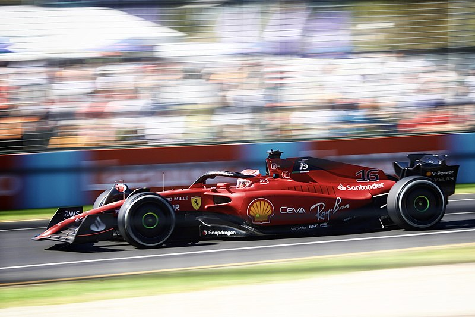

El Campeonato Mundial de Fórmula 1 de la FIA, más conocido como Fórmula 1, F1 o Fórmula Uno, es la principal competición de automovilismo internacional y el campeonato de deportes de motor más popular y prestigioso del mundo. La entidad que la dirige es la Federación Internacional del Automóvil (FIA). Desde septiembre de 2016, tras la adquisición de Formula One Group, la empresa estadounidense Liberty Media es la responsable de gestionar y operar el campeonato.
A cada carrera se le denomina Gran Premio y el torneo que las agrupa es el Campeonato Mundial de Fórmula 1. La mayoría de los circuitos de carreras donde se celebran los Grandes Premios son autódromos, aunque también se utilizan circuitos callejeros y anteriormente se utilizaron circuitos ruteros. A su vez, los automóviles utilizados son monoplazas con la última tecnología disponible, siempre limitadas por un reglamento técnico; algunas mejoras que fueron desarrolladas en la Fórmula 1 terminaron siendo utilizadas en automóviles comerciales, como el freno de disco.
El inicio de la Fórmula 1 moderna se remonta al año 1950, en el que participaron escuderías como Ferrari, Alfa Romeo y Maserati. Algunas fueron reemplazadas por otras nuevas como McLaren, Williams, Red Bull y otras que volvieron como Mercedes se han alzado varias veces con el Campeonato Mundial de Constructores. Por su parte, los pilotos deben contar con la superlicencia de la FIA para competir, que se obtiene por los resultados en otros campeonatos.
En 1945, inmediatamente después de la Segunda Guerra Mundial, sólo hubo cuatro carreras. Antes de la Segunda Guerra Mundial se habían establecido las reglas para las competiciones de Grand Prix, que debían obedecer tanto autos como pilotos. Estas reglas, conocidas en su conjunto como Fórmula, no se concretaron hasta que en 1947 la antigua AIACR se reorganizó, pasándose a llamar la Federación Internacional del Automóvil, conocida por las siglas "FIA". Con sede central en París, al final de la temporada de 1949 anunció que para 1950 unirían varios Grandes Premios nacionales para crear un Campeonato Mundial de Pilotos, por lo que en 1950 se celebró el primer campeonato de Fórmula 1. Por motivos económicos, en los años de 1952 y 1953 todavía se compitió con coches de Fórmula 2 y el calendario continuó incluyendo varias carreras que no eran consideradas Grandes Premios hasta 1983. Se estableció un sistema de puntuación y se reconocieron un total de siete carreras como aptas para el Campeonato del Mundo.
El primer Gran Premio se realizó el 13 de mayo de 1950 en el circuito de Silverstone y fue ganado por el italiano Giuseppe Farina, consiguiendo además el campeonato de 1950 tras vencer a su compañero de equipo, el argentino Juan Manuel Fangio (ambos en la escudería Alfa Romeo). Sin embargo, Fangio ganó el título en 1951, 1954, 1955, 1956 y 1957. Su racha fue interrumpida debido al bicampeonato del piloto de Ferrari Alberto Ascari. También en esta época se vieron pasar pilotos como el británico Stirling Moss que aunque pudo competir con regularidad, nunca fue capaz de ganar el Campeonato Mundial, y por ese motivo los ingleses lo consideran «el conductor más grande que nunca ganó un título mundial».78
El periodo estuvo dominado por las escuderías dirigidas por fabricantes de automóviles —Alfa Romeo, Ferrari, Maserati y Mercedes Benz— que habían competido antes de la guerra. En las primeras temporadas se llegaron a utilizar coches previos a la Segunda Guerra Mundial como el Alfa Romeo 159.6 Tenían motor frontal, de 1,5 litros de cilindrada sobrealimentados o de 4,5 litros de aspiración natural y neumáticos con dibujo. Los campeonatos mundiales de 1952 y 1953 se realizaron con la normativa de la Fórmula 2, con coches más pequeños y menos potentes, debido al escaso número de coches disponibles de Fórmula 1.9 Cuando se restableció el Campeonato Mundial de Fórmula 1, los motores estaban limitados a 2,5 litros; en 1954, Mercedes presentó el avanzado W196, que incluía innovaciones como distribución desmodrómica e inyección de combustible, así como una carrocería estilizada. Mercedes ganó el campeonato de conductores dos años consecutivos (1954 y 1955), antes de retirarse de todas las competiciones automovilísticas, tras el desastre de Le Mans en 1955
El primer gran desarrollo tecnológico se produjo cuando la Cooper Car Company reintrodujo coches con motor central (después de los pioneros Auto Union de Ferdinand Porsche en los años 1930), que evolucionaron desde los diseños de la empresa en la Fórmula 3. El australiano Jack Brabham, campeón del mundo en 1959, 1960 y 1966, pronto demostró la superioridad del nuevo diseño. En 1961, todos los competidores regulares habían cambiado a coches con motor central. El Ferguson P99, con tracción a las cuatro ruedas, fue el último coche de Fórmula 1 con motor frontal en participar en el Campeonato Mundial. Fue el único de su clase en participar de la 1961, tomando la partida únicamente en el Gran Premio de Gran Bretaña.
El primer británico campeón del mundo fue Mike Hawthorn, que condujo un Ferrari al título en 1958.11 Sin embargo, cuando Colin Chapman entró a la Fórmula 1 como diseñador de chasis y más tarde como fundador del Lotus Team, del fabricante Lotus Cars, los británicos tuvieron muchas más victorias en la siguiente década. Entre Jim Clark, Jackie Stewart, John Surtees, Jack Brabham, Graham Hill y Denny Hulme, conductores de equipos británicos y de la Mancomunidad Británica de Naciones, ganaron doce campeonatos mundiales entre 1962 y 1973.
En 1962, Lotus presentó un coche con un chasis monocasco de aluminio en lugar del tradicional chasis tubular. Este resultó ser el mayor avance tecnológico desde la introducción de los coches con motor central. En 1968, Lotus incluyó el logotipo de Imperial Tobacco en sus automóviles, introduciendo el patrocinio de marcas de tabaco en este deporte.
La aerodinámica adquirió lentamente importancia en el diseño de los coches a partir de la aparición perfiles aerodinámicos a finales de los años 60. A finales de la década siguiente, Lotus presentó una carrocería con efecto suelo, que generaba una enorme fuerza de sustentación negativa y permitía circular a mayores velocidades en las curvas —aunque el concepto ya había sido utilizado en el Chaparral 2J de Jim Hall, en 1970—. Tan grandes eran las fuerzas aerodinámicas que presionaban los coches a la pista, hasta 5 g, que fue necesario aumentar la rigidez de los muelles de la suspensión, para que influyeran menos en la altura del chasis respecto al suelo, dejando a la suspensión casi rígida. Este aumento de rigidez de la suspensión hacía depender casi en exclusiva de los neumáticos para amortiguar al chasis y al piloto respecto a las irregularidades de la superficie del circuito.